Fluid dynamics are involced in a large portion of interesting scenes that computer graphics aims to render convincingly. From oceans to rainy cities, water and other fluids add more dynamism to a scene and lend believability to a render if done succesfuly. In this project, we aimed to simulate fluids with a particle based algorithm. With some calculus and using the OpenGL framework, we attempted to render a system of particles that not only emulated real world liquids, but could also be rendered efficiently.
In order to implement our simulation, we first required a framework. Beginning with a template, provided by CS184 staff, we needed to add two key functional components to suit our needs. The first was a way to store and render geometry in the scene other than the particles. To do this, we construct meshes in Blender, a commonly used rendering tool, and then export those scenes to an obj format. Using this file, we parse the given vertex and face information into arrays of vertices representing points, and arrays of polygons representing faces. This functionality makes our modeling more robust, as it allows for more complicated meshes, that can not be hardcoded like the cube that we include in our examples.
The second functional item that we needed to create was a way of stitching together snapshots from the simulation into one, uninterupted video stream. To do this, we take frame by frame screenshots of the camera view, and store them in a directory. We then take these frames and stitch them together using the standard OpenCV framework. This system allows the user to record their render as it is taking place, but is also smooth through user pauses and slowdown due to computational struggle. This means that if you record some number of iterations of the simulation, your frame rate remains constant, based on your given parameters.
void idle(void)
{
if (start) {
particles.step(parser.polys, parser.vertices);
glutPostRedisplay();
if(frame/render_step >= 300){
return;
}
if(frame%render_step == 0)
{
// window detection has to be based on glm library
#if OUTPUT_ANIMATION
cv::Mat3b image(height, width);
glReadPixels(0, 0, width, height, GL_BGR, GL_UNSIGNED_BYTE, image.data);
cv::flip(image, image, 0);
char fn[512];
// sprintf(fn, "result/%04d.jpeg", frame/render_step);
sprintf(fn, "result/%04d.png", frame/render_step);
cv::imwrite(fn, image);
// fprintf(stderr,"Finishes writing image\n");
if (!oVideoWriter.isOpened()) {
Mat image;
image = imread("result/0000.png", CV_LOAD_IMAGE_COLOR); // first png created
oVideoWriter.open("path/MyVideo.mp4", CV_FOURCC('M','P','4','2'), 3, image.size(), true); // mpeg-4 is the fourcc code
}
oVideoWriter.write(image);
#endif
}
frame++;
}In this project, we implemented the algorithm mentioned in Mackler and Müller (which includes some mathemcatical concepts introduced in , which breaks the fluid simulation into several discrete steps.
Use known forces to estimate the velocity of the particle. Using this velocity, estimate a new position, which we will improve upon later.
Find neighboring particles. This allows us to efficiently make future computations
Begin iterations
For all particles calculate λ
For all particles calculate position update vector
For all particles update the new position by adding in correction vector. If iterations not finished, loop to 4.
Update velocity and position.
In order to achieve a reasonable run time, we needed to avoid an O(n2) neighbor-find operation. This is the naive implementation.
To avoid this, we utilize positional hashing. We construct a map that maps uniform cubes in space to bins, and then we take a pass through our particle array, storing a vector of neighbors for each one by checking its bin in the map as well as all neighboring bins in a 3x3x3 cube (we need to check neighboring bins to be sure we don't miss points close to bin boundaries). This is the loop with bin hashing:
// Neighbor Find
double h = .15; // 2 x average particle distance
int i = 0;
std::map> neighbor_map;
for (Particle &par : particles) {
ivec3 k = ivec3((int) floor(par.x_approx / h)[0], (int) floor(par.x_approx / h)[1], (int) floor(par.x_approx / h)[2]);
std::string key = glm::to_string(k);
if (neighbor_map.find(key) == neighbor_map.end()) {
std::vector bin = std::vector();
neighbor_map[key] = bin;
}
neighbor_map[key].push_back(par);
}
for (Particle& par : particles) {
dvec3 flooredvec = floor(par.x_approx / h);
std::string key = glm::to_string(flooredvec);
for (int i = -1; i < 2; i++) {
for (int j = -1; j < 2; j++) {
for (int k = -1; k < 2; k++) {
std::string key_prime = glm::to_string(ivec3((int) flooredvec[0] + i, (int) flooredvec[1] + j, (int) flooredvec[2] + k));
if (neighbor_map.find(key_prime) != neighbor_map.end()) {
std::vector bin = neighbor_map[key_prime];
for (Particle n : bin) {
if (length(n.x_approx - par.x_approx) <= h) {
par.neighbors.push_back(n);
}
}
}
}
}
}
} One of the main properties that govern how a fluid interacts with its surroundings is the concept of incompressibility. This is the idea that the mass density of a fluid is relatively constant throughout its body. It is incompressable. To model this, we construct a system of constraints Ci where the i-th constraint is a constraint for the region surrounding th i-th molecule.
| 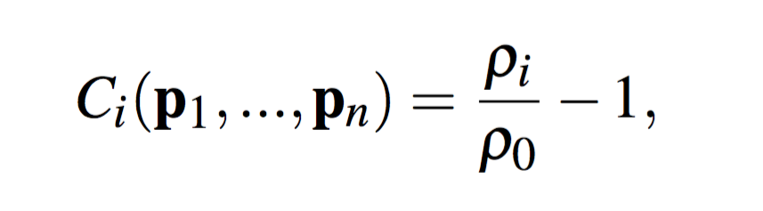 |
Next we need to calculate regional particle densities. This is done by summing over the Poly6 kernel evaluated on the vectors between the particle position and its neighbors.
| 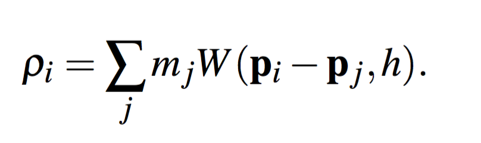 |
Where in the above sum, W is the poly6 kernel defined as,
| 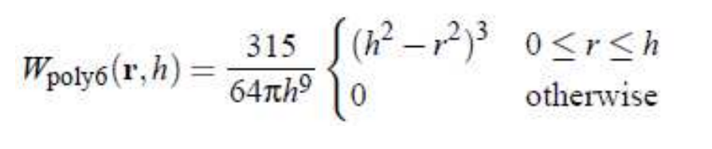 |
The poly6 kernel does well as a mass-density function as it is even and integrates to 1. Under the assumption that the molecules all have the same mass, we can drop the mass in the sum as it does not affect our system solution. Next we approximate a solution to our constraints by stating that C(p + Δp) = 0. We then approximate this condition by approximating Δp as,
| 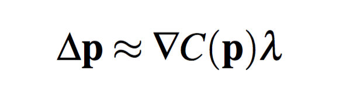 |
Lastly, we approximate a solution to the constraint system with a series of newton's method updates. Newton's method works by fitting a series of quadratics to a function and moves the current point to the minimum of that quadratic. Over many iterations, the method hopes to acheive a good approximation of an optimum, which works especially well for convex functions.
| 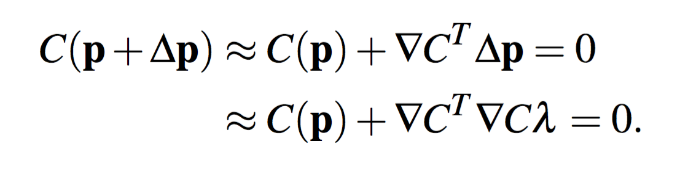 |
The only thing left to calculate in order for us to compute our lambda values. We need to compute the gradient of our constraints, where we use the spiky kernel to avoid some unwelcome properties of the poly6 kernel. This results in the following calculation, where we seperate the gradient into two cases, one when considering the particle itself and the other for neighboring particles.
| 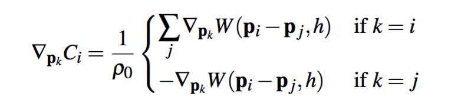 |
Lastly, we plug the gradient we calculate in to the previous definition, and solve the system for λ where we have added an epsilon term into the denominator to avoid instability when fluid is close to uncoupling. This parameter is tuned and fixed over iterations.
| 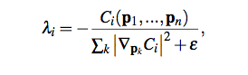 |
Having calculated the lambdas, we need to use them to update the particles positions for this iteration. To do this, we iterate through the particles and compute their correction vectors. Then add the correction vector to its current position for this time step.
| 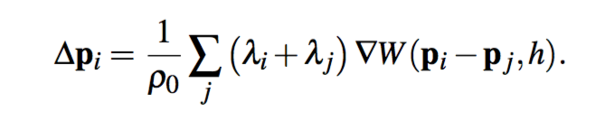 |
| 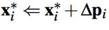 |
After we exceed the number of iterations dictated as a hyperparameter, we have to update the actual position of the particle to allow our renderer to actually display the particles in their new positions. After calculating the approximation for the new position, we perform the following update for velocity,
| 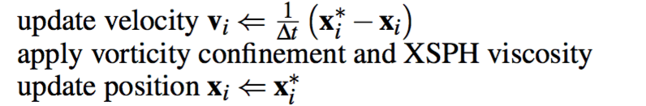 |
Unfortunately we were not able to get the vorticity component of this update working, but the idea is to preserve energy that is lost from damping in most numerical methods. Essentially, throwing energy back into the system based on some vector calculus allows for more realistic splashing effects. Additionaly there are ways to add liquid viscocity which incorporates the tendency of fluids to stick together due to internal friction, but we did not explore these.
The previous description of our algorithm works well, but we it tends to become unstable when particles become more dispersed throughout the scene and a particle is not capable of approaching the rest density of the liquid. When this is the case, large negative pressures can cause heavy clumping. To avoid this, Monaghan [2000] suggests that adding a corrective term to the Δp equation. This
| 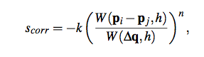 |
| 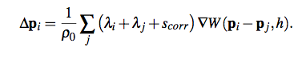 |
Where q is a fixed point defined in the boundary of our neighbor space and n and k are parameters to be tuned. The idea with this update is to promote a more distributed system by avoiding large clumps.
In the simulation, you can see some of the behavior you would expect from a fluid-dynamical system. First particles are somewhat cohesive, staying together rather than bouncing randomly through the scene. Additionally you see some particles sloshing around the side of the bounding box.
We ran into a lot of issues that resulted in less of a working product than we planned for but which ultimately taught us much about working with these kinds of simulations. Our first hurtle was to get the pipeline working. Hardcoding the meshes directly in OpenGL caused a lot of difficulties in figuring out the proper coordinates to use and how to store the information to use for collision detection later. To combat this we came up with the pipeline we mentioned earlier (Detailed in parser.cpp).
The second major issue was translating an academic paper into working code. While the algorithm is provided in detailed pseudo code, some of the nuance needed to go from math to code made it difficult to isolate issues when unexpected behavior revealed itself. This was the most difficult part of the project as it was more of a conceptual bottleneck then a programmatic one.
Lastly incorrectly tuning the parameters in our model resulted in a lot of bizzare effects. Getting the gravitational constant correct, or the rest density of the fluid was key in avoiding unstable behavior and achieving convergence after some number of iterations. Additionaly finding the right distance to use to define neighbors and the constant in our tensile stability term were all very sensitive and needed to be tweaked.
SOURCES: